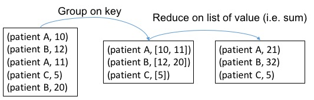

Spark Basics
1. Spark Shell
Spark can run in several modes, including YARN client/server, Standalone, Mesos and Local. For this training, we will use local mode. Specifically, you can start the Spark interactive shell by invoking the command below in the terminal to run Spark in the local mode with two threads. Then you will see
> spark-shell --master "local[2]" --driver-memory 6G
Using Spark's default log4j profile: org/apache/spark/log4j-defaults.properties
...
[messages]
...
Spark context available as sc.
scala>
Here you can set --driver-memory according to your local setting.
If your setting of driver memory is larger than the VM memory, don't forget to change the VM memory setting first.
In Spark, we call the main entrance of a Spark program the driver and Spark distribute computation the workers.
Here in the interactive shell, the Spark shell program is the driver.
In the above example, we set the memory of the driver program to 3GB as in the local mode driver and worker are together.
A driver program can access Spark through a SparkContext object, which represents a connection to a computing cluster.
In the interactive shell, SparkContext is already created for you as variable sc.
You can input sc to see its type.
scala> sc
res0: org.apache.spark.SparkContext = org.apache.spark.SparkContext@27896d3b
2. RDD
Resilient Distributed Dataset (RDD) is Spark's core abstraction for working with data. An RDD is simply a fault-tolerant distributed collection of elements. You can imagine RDD as a large array whose elements cannot be accessed randomly. However, you can apply the same operations to all elements in the array easily. In Spark, all the work is expressed as either creating new RDDs, transforming existing RDDs, or calling operations on RDDs to compute results. There are two ways to create RDDs: by distributing a collection of objects (e.g., a list or set), or by referencing a dataset in an external storage system, such as a shared filesystem, HDFS, HBase, or any data source offering a Hadoop InputFormat.
2.1. Parallelized Collections
For the demo purpose, the simplest way to create an RDD is to take an existing collection (e.g. a Scala Array) in your program and pass it to SparkContext's parallelize() method.
scala> val data = Array(1, 2, 3, 4, 5)
data: Array[Int] = Array(1, 2, 3, 4, 5)
scala> val distData = sc.parallelize(data)
distData: org.apache.spark.rdd.RDD[Int] = ParallelCollectionRDD[0] at parallelize at <console>:23
Once created, the distributed dataset (distData) can be operated in parallel.
For example, we can add up the elements by calling distData.reduce((a, b) => a + b).
You will see more operations on RDD later on.
Warning
Parallelizing a collection is useful when you are learning Spark. However, this is not encouraged in production since it requires the entire dataset to be in memory of the driver's machine first. Instead, importing data from external datasets should be employed.
2.2. External Datasets
A common way for creating RDDs is loading data from external storage. Below you will learn how to load data from a file system.
Here, we choose to read data from HDFS, which stands for Hadoop Distributed File System. (For more details, you could refer to HDFS Basics.)
When you use HDFS for the first time, it's likely that your home directory in HDFS has not been created yet.
In the environment that we provide, there's a special user hdfs who is an HDFS administrator and has the permission to create new home directories.
We need to put the data case.csv into HDFS, and to do this, run the following commands:
> cd /bigdata-bootcamp/data
> sudo su - hdfs
> hdfs dfs -mkdir -p /input
> hdfs dfs -chown -R root /input
> exit
> hdfs dfs -put case.csv /input
What you do above is that first, you switch to the hdfs user.
Then, you create a directory and change ownership of the newly created folder.
(Since it is a virtual environment, you don't need to worry about using root user and its permission.)
Next, similar to creating local directory via linux command mkdir, you creating a folder named input in HDFS.
In hdfs dfs -mkdir, hdfs is the HDFS utility program, dfs is the subcommand to handle basic HDFS operations,
-mkdir means you want to create a directory and the directory name is specified as input.
These commands actually create the input directory in your home directory in HDFS.
Of course, you can create it to other place with absolute or relative paths.
Finally, after exiting HDFS, you copy data from local file system to HDFS using -put.
scala> val lines = sc.textFile("/input/case.csv")
lines: org.apache.spark.rdd.RDD[String] = README.md MapPartitionsRDD[1] at textFile at <console>:21
Here in the example, each line of the original file will become an element in the lines RDD.
Info
Reading data from a file system, Spark relies on the HDFS library. In the example we assume HDFS is well configured through environmental variables or configuration files so that data is ready in HDFS.
3. RDD Operations
RDDs offer two types of operations: transformations and actions:
- Transformations are operations on RDDs that return a new RDD, such as
map()andfilter(). - Actions are operations that return a result to the driver program or write it to storage, such as
first()andcount().
Spark treats transformations and actions very differently, so understanding which type of operation you are performing is very important. You can check whether a function is a transformation or an action by looking at its return type: transformations return RDDs, whereas actions return some other data types.
All transformations in Spark are lazy, in that they do not compute the results right away. Instead, they just remember the operations applied to some base dataset (e.g. an Array or a file). The transformations are only computed when an action requires a result to be returned to the driver program. Therefore, the above command of reading in a file has not actually been executed yet. We can force the evaluation of RDDs by calling any actions.
Let's go through some common RDD operations using the healthcare dataset.
Recall that in the file case.csv, each line is a 4-field tuple (patient-id, event-id, timestamp, value).
function count
In order to know how large is our raw event sequence data, we can count the number of lines in the input file using count operation, i.e.
scala> lines.count()
res1: Long = 14046
Clearly, count is an action.
function take
You may wonder what the loaded data looks like, you can take a peek at the data. The take(k) will return the first k elements in the RDD. Spark also provides collect() which brings all the elements in the RDD back to the driver program. Note that collect() should only be used when the data is small. Both take and collect are actions.
scala> lines.take(5)
res2: Array[String] = Array(00013D2EFD8E45D1,DIAG78820,1166,1.0, 00013D2EFD8E45D1,DIAGV4501,1166,1.0, 00013D2EFD8E45D1,heartfailure,1166,1.0, 00013D2EFD8E45D1,DIAG2720,1166,1.0, 00013D2EFD8E45D1,DIAG4019,1166,1.0)
We got the first 5 records in this RDD. However, this is hard to read due to a poor format. We can make it more readable by traversing the array to print each record on its own line.
scala> lines.take(5).foreach(println)
00013D2EFD8E45D1,DIAG78820,1166,1.0
00013D2EFD8E45D1,DIAGV4501,1166,1.0
00013D2EFD8E45D1,heartfailure,1166,1.0
00013D2EFD8E45D1,DIAG2720,1166,1.0
00013D2EFD8E45D1,DIAG4019,1166,1.0
Note that in above 3 code block examples, the RDD lines has been computed (i.e. read in from file) 3 times. We can prevent this by calling lines.cache(), which will cache the RDD in memory to avoid reloading.
Exercise: How to print the first 5 event-id?
Answer:
scala> lines.take(5).map(_.split(",")).map(_(1)).foreach(println)
function map
The map operation in Spark is similar to that of Hadoop.
It's a transformation that transforms each item in the RDD into a new item by applying the provided function.
Notice this map will map exactly one element from source to target.
For example, suppose we are only interested in knowing IDs of patients, we use map like
scala> lines.map(line => line.split(",")(0))
It is also possible to write a more complex, multiple-lines map function. In this case, curly braces should be used in place of parentheses. For example, we can get both patient-id and event-id as a tuple at the same time.
scala> lines.map{line =>
val s = line.split(",")
(s(0), s(1))
}
function filter
As indicated by its name, filter can transform an RDD to another RDD by keeping only elements that satisfy the filtering condition.
For example, we want to count the number of events collected for a particular patient to verify amount of the data from that patient.
We can use a filter function:
scala> lines.filter(line => line.contains("00013D2EFD8E45D1")).count()
res4: Long = 200
function distinct
distinct is a transformation that transforms a RDD to another by eliminating duplications.
We can use that to count the number of distinct patients.
In order to do this, we first extract the patient ID from each line.
We use the map() function as described above.
In this example, we transform each line into the corresponding patient ID by extracting only the first column.
We then eliminate duplicate IDs by the distinct() function.
scala> lines.map(line => line.split(",")(0)).distinct().count()
res5: Long = 100
function group
Sometimes, you will need to group the input events according to patient-id to put everything about each patient together.
For example, in order to extract index date for predictive modeling, you may first group input data by patient then handle each patient separately in parallel.
We can see each element in RDD is a (Key, Value) pair (patient-id, iterable[event]).
> val patientIdEventPair = lines.map{line =>
val patientId = line.split(",")(0)
(patientId, line)
}
> val groupedPatientData = patientIdEventPair.groupByKey
> groupedPatientData.take(1)
res1: Array[(String, Iterable[String])] = Array((0102353632C5E0D0,CompactBuffer(0102353632C5E0D0,DIAG29181,562,1.0, 0102353632C5E0D0,DIAG29212,562,1.0, 0102353632C5E0D0,DIAG34590,562,1.0, 0102353632C5E0D0,DIAG30000,562,1.0, 0102353632C5E0D0,DIAG2920,562,1.0, 0102353632C5E0D0,DIAG412,562,1.0, 0102353632C5E0D0,DIAG28800,562,1.0, 0102353632C5E0D0,DIAG30391,562,1.0, 0102353632C5E0D0,DIAGRG894,562,1.0, 0102353632C5E0D0,PAYMENT,562,6000.0, 0102353632C5E0D0,DIAG5781,570,1.0, 0102353632C5E0D0,DIAG53010,570,1.0, 0102353632C5E0D0,DIAGE8490,570,1.0, 0102353632C5E0D0,DIAG27651,570,1.0, 0102353632C5E0D0,DIAG78559,570,1.0, 0102353632C5E0D0,DIAG56210,570,1.0, 0102353632C5E0D0,DIAG5856,570,1.0, 0102353632C5E0D0,heartfailure,570,1.0, 0102353632C5E0D0,DIAG5070,570,1.0, 0102353632C5E0D0,DIAGRG346,570,1.0,...
....
function reduceByKey
reduceByKey transforms an RDD[(K, V)] into RDD[(K, List[V])] (like what groupByKey does) and then apply reduce function on List[V] to get final output RDD[(K, V)].
Please be careful that we intentionally denote V as return type of reduce which should be same as input type of the list element.
Suppose now we want to calculate the total payment by each patient.
A payment record in the dataset is in the form of (patient-id, PAYMENT, timestamp, value).
val payment_events = lines.filter(line => line.contains("PAYMENT"))
val payments = payment_events.map{ x =>
val s = x.split(",")
(s(0), s(3).toFloat)
}
val paymentPerPatient = payments.reduceByKey(_+_)
The payment_events RDD returned by filter contains those records associated with payment.
Each item is then transformed to a key-value pair (patient-id, payment) with map.
Because each patient can have multiple payments, we need to use reduceByKey to sum up the payments for each patient.
Here in this example, patient-id will be served as the key, and payment will be the value to sum up for each patient.
The figure below shows the process of reduceByKey in our example:

function sortBy
We can then find the top-3 patients with the highest payment by using sortBy first.
scala> paymentPerPatient.sortBy(_._2, false).take(3).foreach(println)
and output is
(0085B4F55FFA358D,139880.0)
(019E4729585EF3DD,108980.0)
(01AC552BE839AB2B,108530.0)
Again in sortBy we use the _ placeholder, so that _._2 is an anonymous function that returns the second element of a tuple, which is the total payment a patient.
The second parameter of sortBy controls the order of sorting.
In the example above, false means decreasing order.
Exercise: How to calculate the maximum payment of each patient?
Answer:
scala> val maxPaymentPerPatient = payments.reduceByKey(math.max)
Here, reduceByKey(math.max) is the simplified expression of reduceByKey(math.max(_,_)) or reduceByKey((a,b) => math.max(a,b)). math.max is a function in scala that turns the larger one of two parameters.
Exercise: how to count the number of records for each drug (event-id starts with "DRUG")
Answer:
scala> val drugFrequency = lines.filter(_.contains("DRUG")).
map{ x =>
val s = x.split(",")
(s(1), 1)
}.reduceByKey(_+_)
Statistics
Now we have the total payment information of patients, we can run some basic statistics. For RDD consists of numeric values, Spark provides some useful statistical primitives.
scala> val payment_values = paymentPerPatient.map(payment => payment._2).cache()
scala> payment_values.max()
res6: Float = 139880.0
scala> payment_values.min()
res7: Float = 3910.0
scala> payment_values.sum()
res8: Double = 2842480.0
scala> payment_values.mean()
res9: Double = 28424.8
scala> payment_values.stdev()
res10: Double = 26337.091771112468
Set Operations
RDDs support many of the set operations, such as union and intersection, even when the RDDs themselves are not properly sets.
For example, we can combine the two files by the union function.
Please notice that union here is not strictly identical to union operation in mathematics as Spark will not remove duplications.
scala> val linesControl = sc.textFile("/input/control.csv")
scala> lines.union(linesControl).count()
res11: Long = 31144
Info
Here, a more straightforward way is to use directory name to read in multiple files of that directory into a single RDD.
scala> val lines = sc.textFile("/input/")
Exercise: how to count the number of drugs that appear in both case.csv and control.csv?
Answer:
scala> val drugCase = sc.textFile("/input/case.csv").
filter(_.contains("DRUG")).
map(_.split(",")(1)).
distinct()
scala> val drugControl = sc.textFile("/input/control.csv").
filter(_.contains("DRUG")).
map(_.split(",")(1)).
distinct()
scala> drugCase.intersection(drugControl).count()
res: Long = 396
Datasets
Warning
Dataset is added from Spark 1.6+
A Dataset is a new interface added from Spark 1.6 that tries to provide the benefits of RDDs (strong typing, ability to use powerful lambda functions) with the benefits of Spark SQL’s optimized execution engine.
A Dataset has a concrete type of a Scala primitive type (Integer, Long, Boolean, etc) or a subclass of a Product - a case class. The case class is preferred for Spark because it handles the serialization code for you thus allowing Spark to shuffle data between workers. This can additional be handled implementing Externalizable which is a much more efficient mechanism to handle serialization, or by using a compact serializer like Kryos.
Additionally, Spark no longer uses SparkContext directly but prefers the use of a SparkSession that encapsulates a SparkContext and a SqlContext. The SparkSession is a member of the sql package.
There is a wealth of great documentation on the Spark development site.
Creating datasets
Datasets can be created explicitly or loaded form a source (e.g. file, stream, parquet, etc).
case class Person(firstName: String, lastName:String)
// wire-in spark implicits
import spark.implicits._
case class Person(firstName: String, lastName: String)
val ds = Seq(Person("Daniel", "Williams")).toDS()
// here you can perform operations that are deferred until an action is invoked.
// creates a anonymous lambda that looks at the
// firstName of the Dataset[Person] type and invokes a collect
// to pull data back to the driver as an Array[Person]
// the foreach then will invoke a println on each Person
// instance and implicit apply the toString operation that is
// held in the Product trait
ds.filter(_.firstName == "Daniel").collect().foreach(println)
Info
Please refer to Spark SQL, DataFrames and Datasets Guide for more information.
4. Further Reading
For the complete list of RDD operations, please see the Spark Programming Guide.